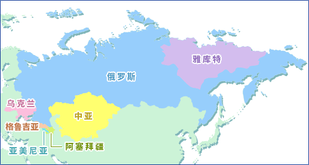

俄罗斯及其周边的酸奶乌克兰/阿塞拜疆/亚美尼亚/格鲁吉亚/中亚/雅库特 
俄罗斯及其周边各国
自古以来最为原始的发酵乳“Prostokvasha”是将原料乳用中温性乳酸菌发酵而成。进入1900年代后，由梅奇尼科夫介绍的以保加利亚Kiselo mljako为原型的“Mechnikov Prostokvasha”也开始进入市场。高加索原产的“Kefir”得到大量生产。另外，据说为了第二次世界大战伤员恢复健康，使用了嗜酸乳杆菌的“嗜酸乳杆菌乳”也发挥了有效的作用，因此当时制造了很多使用嗜酸乳杆菌的发酵乳。从发酵乳中去除乳清后的浓缩发酵乳“Tvorog”也很受消费者欢迎。
在欧洲和亚洲的交界地带喀尔巴阡山脉的东侧制作的“Fusranca”，在东喀尔巴阡山脉的山岳地带制作的“Ciencia”，都是与保加利亚的Brano mljako相似的传统发酵乳。
乌克兰原产发酵乳，也被称为乌克兰酸奶的“Ryazhenka”，是用含有保加利亚菌和嗜热链球菌的起子培养物对在95℃持续2-3小时加热的牛乳进行发酵制成的。其特点是呈褐色、口感滑润和具有焦糖味。同样做法的“Valenes”，也有发酵后将凝乳捣碎食用的。 高加索地区
以高加索山岳地带为原产地的“kefir”，除了乳酸菌以外，还将含有酵母的kefir颗粒作为起子培养物，因此含有少量的酒精（1%以下）和碳酸气，具有爽口的风味。据说很早以前伊斯兰教创始人穆罕默德就为了传教使用这种kefir颗粒。kefir在俄罗斯、波兰、捷克和斯洛伐克以及斯堪的纳维亚各国和匈牙利等地被大量消费，近年来在德国、法国和瑞士等西欧各国也有销售。
阿塞拜疆作为一种国民食物，发酵乳“Schutzma”将牛乳用酸奶菌发酵后把凝固物切断，去除其中的一部分乳清，再将该凝固物放入布袋中挤压，使水分减至70%以下后制成的。“Cacique”则是在加热后部分水分蒸发后的浓缩乳中加入前次剩下的Cacique发酵而成。 亚美尼亚亚美尼亚原产的发酵乳中，被用作起子培养物的有使用酸奶菌（保加利亚菌和嗜热链球菌）的“Matsun”。该地区人们食用通过布袋发酵后去除乳清的浓缩酸奶“Tan”。 格鲁吉亚格鲁吉亚原产的“Matsoni”,和亚美尼亚的Matsun一样，是类似酸奶的一种发酵乳。 中亚（乌兹别克斯坦、土库曼斯坦、塔吉克斯坦、吉尔吉斯、哈萨克斯坦）世界上最古老的游牧民-中亚的雅利安人，据说从公元前两千年左右开始饮用由马奶制成的含酒精的发酵乳“Koumiss（马奶酒）”。酒精含量比高加索地区原产的kefir还高，达到3%。据说Koumiss这一名称来源于住在中亚克曼河畔的克曼人的种族名。13世纪马可·波罗的东方见闻录中也写道“蒙古人最喜欢的饮料是Koumiss”。Koumiss的产地有哈萨克斯坦、巴什基尔、吉尔吉斯、鞑靼和蒙古。在俄罗斯也很受人们喜爱，由强化维生素C的牛奶制成的“Koumiss”被称为“Kerenga”。 雅库特把牛乳加热2-3个小时，再加放前次剩下的发酵乳（Copat）发酵，做成“Copat”。将这种Copat用水稀释制成饮料“Uman”。每到冬季，在Copat里加放一颗黄油和水混合制成“Udang”饮用。 |